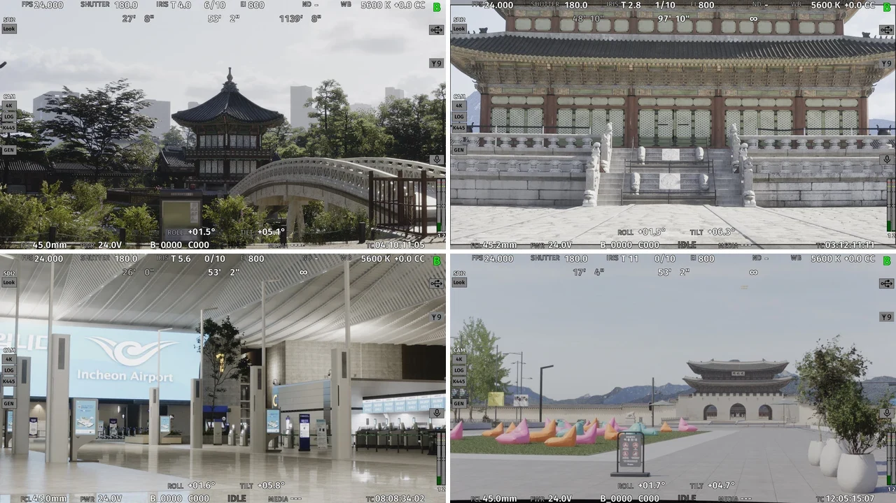
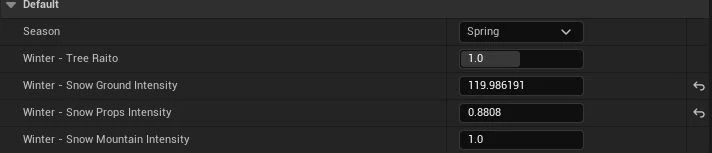
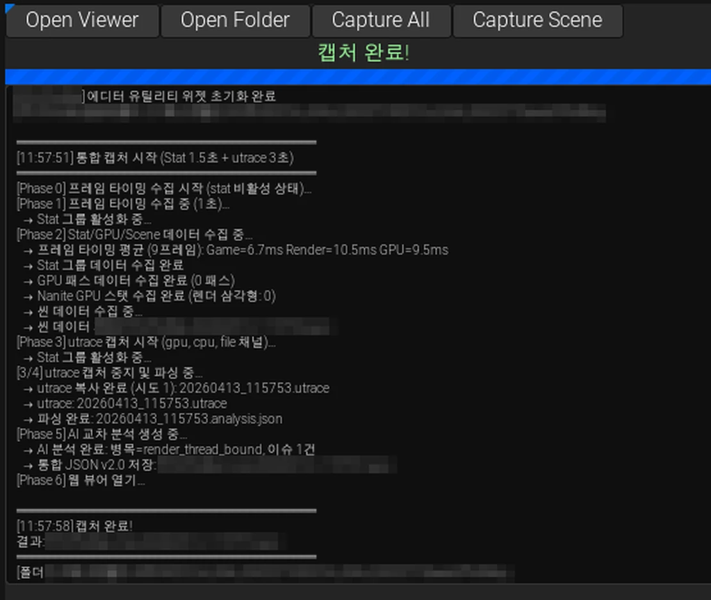

대전 에셋사업
LED 월 촬영을 위한 환경 제작과 최적화

대전스튜디오에 새로 조성된 LED 스튜디오에서 촬영에 사용할 에셋과 Unreal Engine 환경을 제작했다. 환경 제작에 사용할 머티리얼 시스템을 만들고 송출 조건에 맞춰 성능을 확인하는 도구와 씬 최적화 작업을 함께 진행했다.
환경제작#
경복궁과 국회의사당 환경 제작을 맡았다. 필요한 모델링을 하고 PCG로 기와와 건물 레이아웃을 배치했다. 궁궐은 기와와 건물처럼 반복되는 구성이 있어 배치 규칙을 비교적 단순하게 구성할 수 있었다.
경복궁에는 경회루와 근정전 등 약 10개의 스팟이 있었다. 담당자별로 스팟을 나누어 제작했고 그중 맡은 구역의 환경을 작업했다. 아래는 제작한 머티리얼 시스템을 사용한 경복궁 환경이다.


같은 환경에서 낮·석양·밤 설정을 바꿔 촬영할 수 있도록 구성했다. 아래는 왼쪽부터 낮·석양·밤을 적용한 모습이다.


범용 머트리얼 시스템#
환경 제작에 반복해서 사용하는 표면 효과를 기능별로 나눴다. 흙과 모래 및 이끼 등의 효과를 필요한 만큼 조합할 수 있도록 각 효과를 Material Function으로 분리하고 플러그인으로 묶었다.

일반 UV와 World-Aligned 투영 중 표면에 맞는 방식을 선택하도록 했다. 레이어별 색상과 러프니스 등 작업자가 조절할 값은 노출하고 내부 블렌딩 연산과 노이즈 파라미터는 숨겼다. 계절과 날씨는 MPC로 제어했다.
마스터 컨트롤러 액터에서 계절과 눈 관련 값을 조절하도록 구성했다.


제출한 포트폴리오의 경복궁 환경 기록에서 새로 설계한 마스터 10종은 인스턴스 1,049개와 고유 메시 799종에 사용됐다. 전체 씬에 존재하는 모든 마스터를 합한 수치는 아니다.
Pixera 송출과 프로파일링 도구#
기존 ICVFX 환경에서는 프레임이 잘 나왔지만 이번 프로젝트의 Pixera 송출 구성에서는 프레임이 크게 떨어졌다. 작업 시간이 부족해 반복 측정에 드는 시간을 줄일 필요가 있었다. 현재 뷰의 성능 데이터와 씬 구조를 함께 추출하는 Editor Utility를 만들었다.


Insights trace와 stat rhi, stat gpu, stat scenerendering 값 및 씬 구조를 수집했다. 수집한 자료는 분석 템플릿과 함께 리뷰 도구에 전달했다. LLM 분석 템플릿으로 만든 보고서도 사람이 씬 조건과 대조해 판독하고 수정할 대상을 정했다. 도구의 캡처 기록은 단일 PC 기준이다.
제출한 경력기술서의 운영 기록상 하루 8회의 측정·수정·재측정 사이클을 확보했다. 파트 4명 중 2명은 도구를 직접 사용했고 나머지 2명은 정리된 리포트를 받아 작업했다.
씬 최적화와 결과#
수집한 데이터를 바탕으로 고정된 촬영 뷰에서 비용이 큰 부분을 줄였다. 로케이션 5곳 중 3곳을 직접 제작했고 외주 데이터를 사용한 2곳을 포함해 5곳 전체의 최적화를 맡았다. 촬영 뷰는 로케이션마다 10개씩 총 50개로 고정되어 있었다.
작업 기준과 조치#
stat과 Unreal Insights를 대조해 가시성 계산과 레이트레이싱 인스턴스를 확인했다. 경복궁의 식생 바람과 바닥 표현 및 공항의 유리 반사처럼 촬영 화면에 중요한 요소는 유지했다.
- 반사에 기여할 필요가 없는 컴포넌트의
Visible in Ray Tracing을 해제했다. - 고정 뷰에서 보이지 않는 범위는 Cull Distance Volume으로 정리해 가시성 계산 대상을 줄였다.
- Lumen과 Nanite 설정을 조정하면서 공항의 유리 반사 품질을 유지했다.
- 무거운 메시를 버텍스 수와 씬 삼각형 점유율로 정리해 팀에 전달했다. 리토폴로지와 노멀 베이크 및 텍스처로 보완할 부분을 함께 정했다.
측정 결과#
현장에서 반복 측정하기 어려워 RTX 4090 개발 PC에서 CineCamera 위치와 조건을 고정하고 전후를 비교했다. 아래 표는 동일한 CineCamera 뷰의 결과다.
| 지표 | 변경 전 | 변경 후 |
|---|---|---|
| FPS | 72.2 | 94.1 |
| 프레임 시간 | 13.85ms | 10.63ms |
| GPU 시간 | 11.03ms | 7.93ms |
| 레이트레이싱 인스턴스 | 65,647 | 15,671 |
| ComputeViewRelevance | 4.285ms | 2.420ms |
| 텍스처 메모리 | 5,128MB | 4,109MB |
여러 조치를 함께 적용한 전후 결과다. 각 조치의 독립적인 성능 기여도는 이 비교만으로 구분하지 않았다. 개발 PC와 현장 수치는 제출한 포트폴리오의 측정 기록이며 홈페이지 작업 중 다시 측정한 결과가 아니다.
현장은 RTX A6000 렌더 머신 11대와 3840×1536 LED 패널 11개로 구성됐다. LED 목표는 30fps였지만 현장은 gen-lock으로 24fps에 고정됐다. 현장 송출은 11fps에서 상한인 24fps까지 개선됐다. 개발 PC의 94.1fps와 현장의 24fps는 하드웨어와 출력 조건이 다른 결과다.